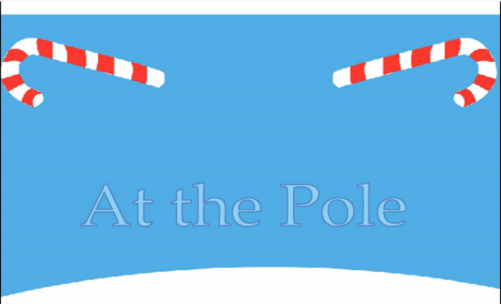

Logo Design
2015 NACTE Logo Design Contest - Spring 2015

I submitted two different logo designs for the annual NACTE logo design contest. This year's motto was "A Vision for Tomorrow." I attributed that motto to qualities such as progress, idealism, and technology and incorporated those elements into my designs. In retrospect, they both were visually appealing and symbolizing, something that I could appreciate in my graphic design work.
80 Years of Marketing Education - Winter 2015

60 Years of LVGEA - Early 2016

Animation
Fable Animation - Spring 2015
- 
In Adobe Flash, my first major work was an animation of a fable of my choice. Over the course of the project, I had to make some interesting decisions in regards to graphics and director details. The overall process was a great introduction to Flash. I struggled a bit at first, but I quickly improved at the program and designed a well-put fable animation.
Flash Shooter Game - Fall 2015
To prepare for the upcoming Adobe Flash ACA exam, it was essential that we had an understanding of ActionScript, the programming language of Flash. The learning experience was through a design of a video game with custom graphics and programming. The game ended up functioning well and appearing nicely and I definitely have a better understanding of ActionScript.
Web Design
Dante's Inferno PBL - Spring 2015

Business Card - Fall 2015
My portfolio also comes with a business card, containing basic contact information. Over the course of this year, I will continue to update my portfolio with new assets.
JavaScript Quiz - Fall 2015
JavaScript was a new experience for me as a web designer. It was my first experience into programming. For this project, we had to team into partners and create a quiz using the JavaScript we learned. This project ended up being difficult and tedious at first, but Raymond and I realized how simple it was by playing around with the language. Our CSS was a bit worse than usual, but our quiz was running smoothly.
Responsive Website - Winter 2015 / Early 2016
The next website we completed was a redesign of the negatively received SWCTA site. We had to make it more logical, easier to navigate, and more appealing. To top it off, the next skill we learned was responsive design, which we learned throughout second quarter. This project was a hassle because of the specific requirements, but my group and I managed to pull it through. I am most satisfied with this work because I was able to make the site fully responsive while still looking visually clean and appealing.
Creative Design
Freshman Spring PBL - Spring 2014
Freshman year was when it all began. For this long two-month PBL, we had to create a realistic 3-D sculpture of an object of our choice. We were in groups of five and had to manage designing, modeling, building, and video documenting. This was one of the most stressful projects I have completed. I found the aspect of modeling to be difficult and we ended up crunching for time.
Warhol Effect
This image may appear strange, but it is actually a visual effect developed by Andy Warhol, an American pop artist. I took a standard image of one of my teachers and used Photoshop to replicate the effect. The transition was not perfect, of course, but I gained quite a bit of insight on how Photoshop can implement painting techniques.
Holiday Card
Around the winter season, it was time to design a holiday card. Using Illustrator, I took a very symbolic approach to my card, choosing typical images of the holiday season such as snowflakes, candy canes, and bells.
Creativity Week
The first week back in school in Graphic Design was one for creativity. Each of us participated in several activities that would test our creativity ingenuity and then watch TED talks that explain the thinking process. One figure even encouraged that high school students should be playing more. We culminated this week of creativity with a project to make something of value out of accumulated trash. With a bit of effort, we constructed a neat-looking movie theater.
Sketchbook Final Project
At the end of sophomore year, we had to choose a theme and explore it in-depth within our sketchook. Our exploration included discoveries of fonts, colors, and images that would relate to our theme. The following year, we took these ideas and put them into one final project. I can admit that my end product was a bit rushed, but the idea of "second chances" is definitely present throughout the design.
Vans Custom Culture

Community Service Projects
Hip Hop Meets IT

Adobe Voice
Adobe Voice was a new software that we learned. For this project, we had to form groups of four to five and sell a pitch for the annual Flight to Europe hosted by the foreign language department. To do so, we relied on our persuasive skills and speaking as well as the handy capabilities of the technology. Our videos were high-quality and made many want to visit Germany over the summer.